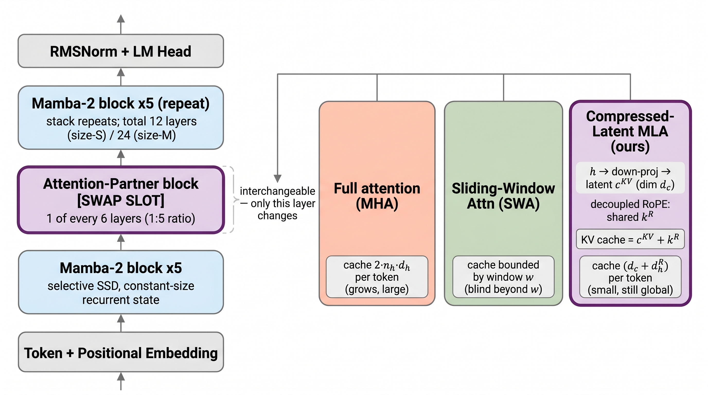
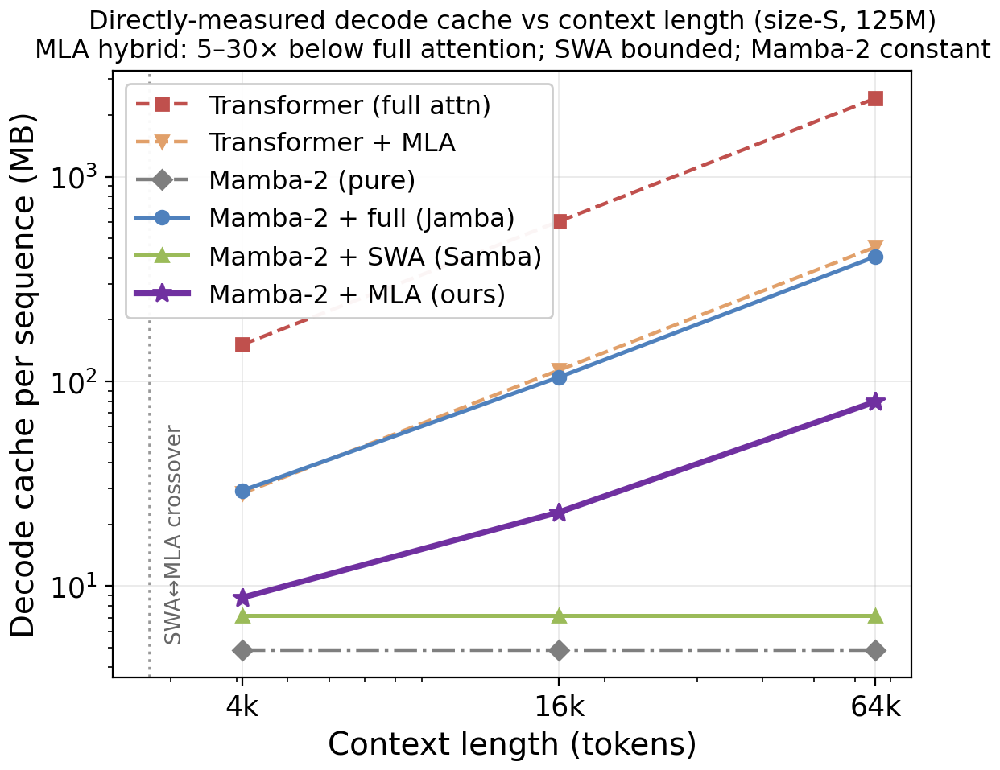
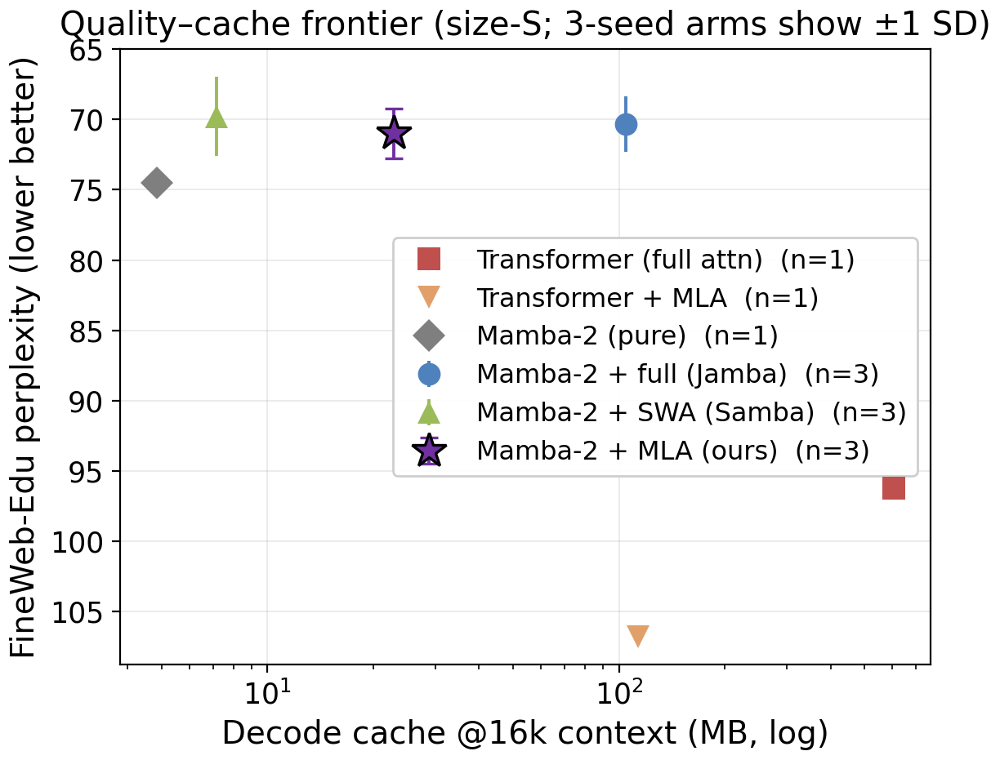
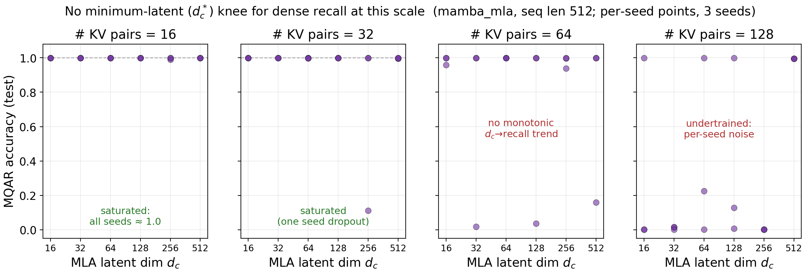
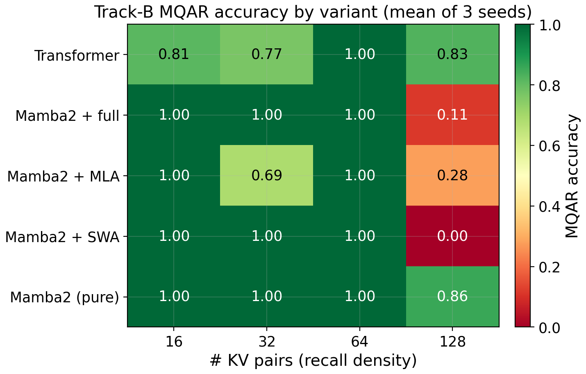
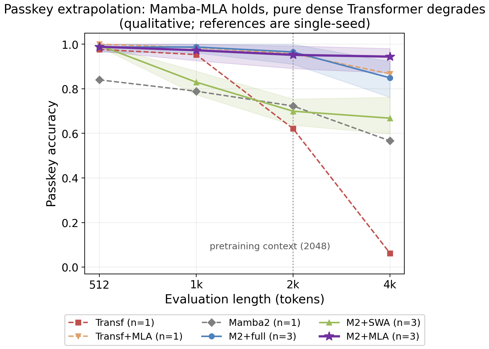

Vizuara AI Labs · Controlled architecture study
A controlled quality–cache–recall characterization at 125–350M parameters
Naman Dwivedi, Raj Dandekar, Rajat Dandekar, Sreedath Panat
Vizuara AI Labs · hello@vizuara.com
Long-context language models hit a memory wall: Transformers remember every token exactly but their key–value cache grows without bound, while state-space models like Mamba keep a small fixed memory and forget exact details. Hybrids combine the two, yet nobody had cleanly tested which kind of attention a Mamba backbone actually needs. We built six models that are matched in every way except one — the attention layer — and measured memory, quality, and recall. We find that DeepSeek's compressed-latent attention (MLA) gives a Mamba-2 hybrid the same quality as full attention while using 5 to 30 times less decode cache. We also report, honestly, a result that did not pan out: at this scale, compressing the latent further does not hurt recall, because the cache is simply never the bottleneck. We explain exactly why, and where the bottleneck would appear.

State-space models such as Mamba-2 decode with a constant-size recurrent state but are weak at exact dense recall, whereas attention preserves recall at the cost of a growing key–value cache. Mamba-attention hybrids bridge this gap, yet existing ones either pair Mamba with standard attention or build a Mamba-plus-MLA model only by distillation or at production scale, so no work runs a controlled, from-scratch, matched-budget single-variable swap of the attention partner. We train, from scratch at 125M and 350M matched parameters, a Mamba-2 backbone whose only changed component is its attention partner among full attention, sliding-window attention (SWA), and DeepSeek compressed-latent MLA with decoupled rotary embeddings, and we directly measure decode-cache bytes, perplexity, and synthetic dense recall. We report two findings. First, the MLA hybrid keeps a decode cache 5 to 30 times smaller than full attention (80 MB vs 2416 MB at 64k context, size-S) at statistically indistinguishable perplexity (71.0 ± 1.8 vs 70.3 ± 2.0, three seeds, not significant), and we locate the SWA-to-MLA cache crossover. Second, we report a clean negative result: sweeping the MLA latent dimension over a dense multi-query recall grid reveals no minimum-latent knee in this short-context regime, because MLA caches the latent per token, making even a 16-dimensional latent non-binding for up to 64 key-value pairs at length 512. The result is a rigorous, fully traceable map of when compressed-latent attention helps a Mamba hybrid, and an honest boundary on the recall-versus-compression story.
The two efficient-architecture families pull in opposite directions. A Transformer's cache grows linearly with context, so at 64k tokens a 125M model already needs over 2 GB of decode cache. Mamba-2 fixes this with a constant-size recurrent state, but a single fixed state cannot hold many exact key–value associations, so pure SSMs fail dense recall. Hybrids interleave a few attention layers into a Mamba backbone to recover recall cheaply. The open question is which kind of attention to interleave: full attention keeps a large growing cache; sliding-window attention bounds the cache but goes blind beyond its window; DeepSeek's MLA keeps full global attention but caches only a small per-token latent. Prior Mamba-plus-MLA models exist only as distilled or 48B-scale artifacts, so the controlled, single-variable comparison had never been run.

We hold depth, width, tokenizer, data order, and total parameters fixed, and change only the attention-partner layer of a shared Mamba-2 backbone (shown above). Because exactly one thing varies, any difference in quality, cache, or recall is attributable to the attention operator alone. We pretrain on 2.0B FineWeb-Edu tokens, measure decode-cache in exact bytes, and probe dense recall both on the pretrained checkpoints and through small models trained directly on synthetic multi-query associative recall (MQAR).
Non-embedding parameters are matched within 0.27% via the feed-forward width alone, so the comparison is genuinely single-variable.
DeepSeek-V2 latent attention with decoupled RoPE: a low-rank latent cKV plus a small shared rotary key, cached per token.
Cache counted in exact bytes (not big-O); recall uses fresh-data-per-step MQAR so models must learn the algorithm, not memorize a fixed pool.
| Variant (size-S, 125M) | FineWeb ppl ↓ | cache @64k (MB) ↓ | passkey @4k ↑ |
|---|---|---|---|
| Transformer (full attn) | 96.19 | 2415.9 | 0.06 (n=1) |
| Mamba-2 + full (Jamba) | 70.34 ± 1.96 | 406.7 | ~0.85 |
| Mamba-2 + SWA (Samba) | 69.79 ± 2.82 | 7.2 (bounded) | ~0.67 |
| Mamba-2 + MLA (ours) | 71.00 ± 1.75 | 79.5 | 0.94 |
| Mamba-2 (pure) | 74.54 | 4.8 (constant) | 0.57 |
Size-S, 3 seeds for the hybrids (mean ± sample SD); references are single-seed. Cache is directly measured in bytes. Passkey is a qualitative length-extrapolation floor (the transformer reference is single-seed). Full numbers in the public ledger.
MLA buys a 5 to 30 times cache reduction at no quality cost. At matched perplexity, the MLA hybrid's decode cache is an order of magnitude below full attention at every length we measured, bounded below only by the windowed SWA (which goes blind beyond its window) and the constant pure-Mamba state (which cannot do dense recall). Among the variants that keep global exact recall, MLA holds the smallest growing cache.
The three Mamba hybrids are statistically tied on quality. Across three seeds, full, sliding-window, and MLA partners reach indistinguishable perplexity (pairwise Welch tests not significant). Compressing the attention cache with MLA therefore costs essentially no quality at this scale.
The intended latent-dimension knee did not appear — and we explain why. We pre-registered a search for the smallest latent dimension that preserves recall. None was found: MLA caches its latent per token, so at length 512 even a 16-dimensional latent gives roughly 8,000 cached dimensions, far more than 64 key-value pairs require. The latent is simply not the binding constraint in this regime, so there is no knee to find. We report this as an honest null with its mechanism and the regime (longer context, smaller latent) where the knee would appear.
The hybrid extrapolates beyond its training context. On passkey retrieval evaluated past the pretraining length, the Mamba hybrids hold while the pure dense Transformer collapses, consistent with rotary length-extrapolation limits rather than a recall deficit.




A Mamba-2 backbone paired with compressed-latent MLA matches full-attention quality at 5 to 30 times smaller decode cache, with the SWA-to-MLA cache crossover located near 2,700 tokens.
At short context, the MLA latent dimension is not the bottleneck for dense recall: per-token caching keeps it ample even at a 16-dimensional latent, so the recall-versus-compression knee lives at longer context than this budget reached.
Negative results are reported as results. We pre-registered the knee search, did not find it, and explain the mechanism rather than hiding the null.
The whole study is single-variable, matched within 0.27%, and fully reproducible: every figure and table traces to a public 172-run ledger.
A single learning rate was shared across all architectures, so the pure-attention baselines' absolute perplexity should be read as an upper bound rather than an architectural verdict; the Mamba-hybrid comparison, which shares the regime, is unaffected. The scale and regime (125 to 350M parameters, training context 2048, synthetic length 512, 12,000 recall steps) leave the latent dimension non-binding and the densest recall column undertrained, so the latent-knee and Mamba-offload hypotheses are untested rather than refuted. All size-M runs and the pure references are single-seed, MLA's cache still grows with length (so SWA wins on memory below the crossover), and synthetic recall is not natural-text recall. Future work should push context to several thousand tokens with a smaller latent and longer training to place the latent on the critical path, add seeds, and test transfer on real retrieval benchmarks.
@misc{dwivedi2026mambamla,
title = {Compressed-Latent vs. Sliding-Window vs. Full Attention as Mamba-2's Partner:
A Controlled Quality-Cache-Recall Characterization at 125-350M Parameters},
author = {Dwivedi, Naman and Dandekar, Raj and Dandekar, Rajat and Panat, Sreedath},
year = {2026},
note = {Vizuara AI Labs},
url = {https://github.com/OmuNaman/mamba-mla-hybrid}
}